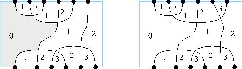
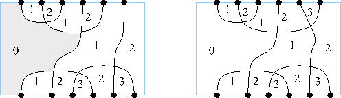

\section{Further exercises}
\subsection{Graded categories}
\subsubsection{On a Lemma of Levitzki}
Let $R$ be a ring and $S$ a subring.
Then $R$ is an $S$-bimodule by restriction.
We can ask if $R$ decomposes as $R = S \oplus S'$ as an $S$-bimodule.
For example, suppose that $R$ has a finite group of automorphisms $G$ (say),
with $|G|$ invertible in $R$,
and $S$ is the fixed ring.
That is, $S$ is the subring of elements fixed by $G$.
Set $t(r) = \sum_{g \in G} g(r)$ and $t' = |G|1 - t$,
so that $R = t(R) + t'(R) = S + t'(R)$ as an abelian group.
Then $s,t \in S$ implies $st \in S$ and $s \in S$, $s' \in t'(R)$
implies $ss', s's \in t'(R)$.
Indeed say $s' = t'(r)$. Then
$ss' = s t'(r) = s (|G| r - \sum_{g \in G} g(r) ) = |G| sr - \sum s g(r)
= |G| sr - \sum g(s) g(r) = |G| sr - \sum g(sr) = t'(sr)$.
For a specific example consider $R= \C$ and $G$ generated by complex conjugation.
In this case $\C = \R \oplus i \R$ as an $\R$-module.
\begin{lemma}
If $R$ decomposes as $R = S \oplus S'$ as an $S$-bimodule,
and $R$ is semisimple, then so is $S$.
\end{lemma}
Proof: Here we take
Note that any non-trivial graph can be made into an $S$-graph
(for example by mapping all of $S$ to one vertex).
 
Note that none of the pictures so far are
pictures of 1-plane partitions.
Note that a crossing
is left-exposed if it meets a 0-alcove.
(Such a crossing also meets two 1-alcoves and a 2-alcove.)
We say that a crossing is $m$-left-exposed if it meets an $m$-alcove
and no lower (cf. [GMP]) (i.e. it meets two $m+1$-alcoves).
As noted, the concatenation of two efficient pictures of pair partitions
gives a picture of the composition pair partition,
but is not efficient in general. It may have loops
of internal vertices for example.

Note that none of the pictures so far are
pictures of 1-plane partitions.
Note that a crossing
is left-exposed if it meets a 0-alcove.
(Such a crossing also meets two 1-alcoves and a 2-alcove.)
We say that a crossing is $m$-left-exposed if it meets an $m$-alcove
and no lower (cf. [GMP]) (i.e. it meets two $m+1$-alcoves).
As noted, the concatenation of two efficient pictures of pair partitions
gives a picture of the composition pair partition,
but is not efficient in general. It may have loops
of internal vertices for example.